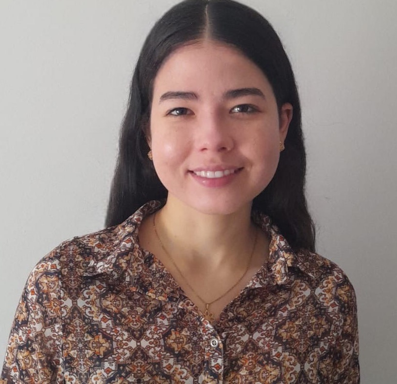

Ana María Patrón Piñerez
I am a Master’s student in Economics at Universidad de los Andes. My thesis studies how neural networks can be used to recover counterfactuals of Bayesian Nash equilibria in electricity markets. More broadly, I am interested in developing and applying mathematical methods to solve practical problems.
My research interests include causal inference, counterfactual estimation, missing data, selection bias, machine learning, and econometrics.
I hold a B.A. in Economics and a B.S. in Mathematics from Universidad de los Andes. Currently, I work as a Senior Researcher at Quantil Applied Mathematics, where I apply mathematical methods and machine learning to build predictive models and address industry challenges.
I was awarded the Mary Lister Fellowship from Imperial College London and the Globalink Research Award from Mitacs, which supported summer research internships in 2024 and 2025.
